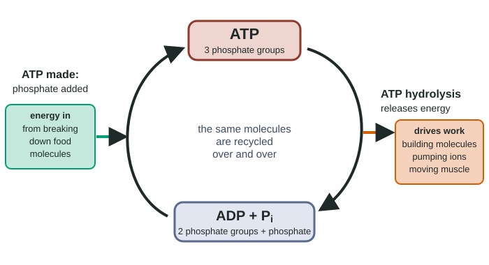

Cellular Energy
Energy is never created or destroyed (first law), and each conversion releases some as unusable heat, raising disorder (second law).
Part 1 · Hook
Why this matters
You are made of about 30 trillion cells, and every one of them is constantly rebuilding itself: pumping ions, repairing proteins, copying molecules. Stop feeding the cells and the order falls apart within minutes in the brain, and within hours in most tissues. Yet your body holds only about 50 grams of ATP at any moment, while you use roughly your own body mass of it every day. The same molecules are spent and remade, over and over.
Part 2 · Before you start
What this builds on
Part 3 · Prerequisite check
Quick check before you start
1. What is ATP's main job in a cell?
- It carries energy from reactions that release it to processes that need it
- It stores the cell's genetic instructions
- It forms the main structural fibers of the cell
Show the answer
ATP (adenosine triphosphate) is the cell's energy carrier. Its phosphate groups are the key to how it hands energy on.
- Correct: It carries energy from reactions that release it to processes that need it:
- It stores the cell's genetic instructions:
- It forms the main structural fibers of the cell:
2. Which statement about an enzyme-catalyzed reaction is true?
- The enzyme raises the amount of energy the reaction releases
- The enzyme lowers the activation energy but not the energy released
- The enzyme provides the energy for reactions that need an input
Show the answer
Enzymes lower the hill, not the start or end levels. Whether a reaction releases or needs energy is set by its reactants and products.
- The enzyme raises the amount of energy the reaction releases:
- Correct: The enzyme lowers the activation energy but not the energy released:
- The enzyme provides the energy for reactions that need an input:
3. A molecule binds an enzyme away from its active site and changes the enzyme's shape, slowing it. This molecule is
- a competitive inhibitor
- a substrate
- a noncompetitive (allosteric) inhibitor
Show the answer
Binding at an allosteric site and changing the active site's shape is noncompetitive inhibition. Cells use this to control pathways, as this topic shows.
- a competitive inhibitor:
- a substrate:
- Correct: a noncompetitive (allosteric) inhibitor:
Part 4 · See it
See it first

Part 5 · Step by step
How it works, step by step
- Energy cannot be created or destroyed, only converted (first law of thermodynamics).A cell cannot make its own energy; it must take in energy, as food or sunlight, and convert it.
- Every conversion turns some energy into heat that cannot do work, increasing disorder (second law).Building and keeping the cell's order uses energy up, so living things need a constant energy input.
- Breaking down food molecules is exergonic: the products hold less energy than the reactants.Part of the released energy is captured by adding a phosphate to ADP, making ATP.
- ATP hydrolysis (ATP + H₂O → ADP + Pi) is strongly exergonic.Its energy can drive an endergonic process if the two are coupled, usually by transferring ATP's phosphate to a reactant or a protein (phosphorylation).
- The phosphorylated molecule is less stable, or changes shape.The coupled process releases energy overall, so it goes: building molecules, pumping ions, moving muscle.
- In a metabolic pathway, the end product builds up when the cell has enough of it.It binds an allosteric site on the first enzyme and slows the whole pathway (feedback inhibition), so raw materials and energy are not wasted.
Part 6 · Key ideas
Key ideas
- Exergonic reactions release energy (ΔG negative); endergonic reactions need energy (ΔG positive). An endergonic reaction goes only if it is coupled to an exergonic one so the total ΔG is negative.
- ATP is an energy carrier, not a long-term store. Fats and starch store energy; ATP moves it from where it is released to where it is used, minutes later.
- In a redox reaction, one molecule loses electrons (oxidized) and another gains them (reduced). Breaking food down moves electrons from fuel molecules toward oxygen, releasing energy.
- Metabolic pathways are chains of enzymes. Catabolic pathways break molecules down and release energy; anabolic pathways build them and use it.
Part 7 · Misconception
A common mistake
The wrong idea: Cells make energy when they break down food, and ATP is where they store it.
What actually happens: Cells convert energy; they never make it. Breaking down food releases energy already stored in its bonds, and ATP carries part of it for a short time to where work is done. Most of the energy ends up as heat.
Part 8 · Check yourself
Check yourself
Exam-style questions. Anything you miss goes into your review queue.
Data table
Energy changes of five reactions
The table gives the standard free-energy change (ΔG) of five reactions that occur in cells. A negative ΔG means the reaction releases energy; a positive ΔG means it needs energy. When two reactions are coupled, their ΔG values add.
| Reaction | Equation | ΔG (kJ/mol) |
|---|---|---|
| 1 | ATP + H₂O → ADP + Pi | −30.5 |
| 2 | glutamate + NH₃ → glutamine + H₂O | +14.2 |
| 3 | glucose + Pi → glucose 6-phosphate + H₂O | +13.8 |
| 4 | creatine phosphate + H₂O → creatine + Pi | −43.0 |
| 5 | glucose 6-phosphate + H₂O → glucose + Pi | −13.8 |
1. Which reactions in the table are exergonic?
- 1, 4 and 5
- 2 and 3
- 1 and 4
- 2, 3 and 5
Show the answer
Exergonic reactions release energy and have a negative ΔG: reactions 1 (−30.5), 4 (−43.0) and 5 (−13.8).
- Correct: 1, 4 and 5: All three have a negative ΔG, so they release energy.
- 2 and 3: Reactions 2 and 3 have a positive ΔG: they are endergonic.
- 1 and 4: Reaction 5 also has a negative ΔG (−13.8), so it is exergonic too.
- 2, 3 and 5: Reactions 2 and 3 are endergonic; only reaction 5 of these three releases energy.
2. Cells make glutamine by coupling reaction 2 to reaction 1. What is the ΔG of the coupled process, in kJ/mol? Include the sign and give one decimal place.
Type a number in kJ/mol.
Show the answer
Coupled ΔG = ΔG of reaction 1 + ΔG of reaction 2 = −30.5 + 14.2 = −16.3 kJ/mol. The negative total means the coupled process releases energy and can go.
- Answer: -16.3 kJ/mol
3. Making ATP from ADP and Pi is the reverse of reaction 1, so its ΔG is +30.5 kJ/mol. Which claim is supported by the table?
- Breaking down creatine phosphate can drive ATP synthesis, but breaking down glucose 6-phosphate cannot.
- Breaking down glucose 6-phosphate can drive ATP synthesis, because its ΔG is negative.
- Neither creatine phosphate nor glucose 6-phosphate can drive ATP synthesis, because ATP synthesis is endergonic.
- Both can drive ATP synthesis, because any exergonic reaction can be coupled to any endergonic one.
Show the answer
Coupled with creatine phosphate: −43.0 + 30.5 = −12.5 kJ/mol, negative, so it goes. With glucose 6-phosphate: −13.8 + 30.5 = +16.7 kJ/mol, positive, so it does not.
- Correct: Breaking down creatine phosphate can drive ATP synthesis, but breaking down glucose 6-phosphate cannot.: Creatine phosphate releases more than 30.5 kJ/mol; glucose 6-phosphate releases less. Muscles use creatine phosphate to remake ATP quickly.
- Breaking down glucose 6-phosphate can drive ATP synthesis, because its ΔG is negative.: A negative ΔG is not enough: it must outweigh the +30.5 needed. −13.8 + 30.5 is still positive.
- Neither creatine phosphate nor glucose 6-phosphate can drive ATP synthesis, because ATP synthesis is endergonic.: Endergonic reactions go when coupled to a larger exergonic one; creatine phosphate is large enough.
- Both can drive ATP synthesis, because any exergonic reaction can be coupled to any endergonic one.: The total must be negative; coupling glucose 6-phosphate breakdown with ATP synthesis gives +16.7 kJ/mol.
4. In the cell, coupling reaction 1 with reaction 2 happens in two steps on one enzyme. Which description of how the energy is passed on is most accurate?
- ATP's last phosphate moves onto glutamate, making a less stable intermediate that reacts with NH₃.
- ATP is hydrolyzed first, and the heat released warms the glutamate and NH₃ so they react faster.
- ATP binds the enzyme's allosteric site, lowering the ΔG of reaction 2 to below zero on its own.
- ATP gives its energy to the enzyme, which stores the energy in its structure and later passes it on to glutamate.
Show the answer
Coupling works through a shared intermediate. Phosphorylating glutamate makes a high-energy, unstable molecule; its reaction with NH₃ releases the phosphate and is exergonic.
- Correct: ATP's last phosphate moves onto glutamate, making a less stable intermediate that reacts with NH₃.: Phosphate transfer to a reactant (phosphorylation) is the usual way ATP drives a reaction.
- ATP is hydrolyzed first, and the heat released warms the glutamate and NH₃ so they react faster.: Heat spreads out and cannot drive a specific reaction; the energy is passed on through the phosphate.
- ATP binds the enzyme's allosteric site, lowering the ΔG of reaction 2 to below zero on its own.: An allosteric effect changes the enzyme's rate, not the ΔG of the reaction it catalyzes.
- ATP gives its energy to the enzyme, which stores the energy in its structure and later passes it on to glutamate.: Enzymes come out of reactions unchanged and do not store energy.
5. In the overall reaction C₆H₁₂O₆ + 6 O₂ → 6 CO₂ + 6 H₂O, which statement about electrons is correct?
- Glucose is oxidized as it loses electrons; oxygen is reduced as it gains them, releasing energy.
- Glucose is reduced as it gains electrons from oxygen, which stores energy in the carbon dioxide made.
- Oxygen is oxidized as it loses electrons to glucose, and the water formed holds most of the energy.
- No electrons move, because each atom on the left side of the equation also appears in the products on the right.
Show the answer
Glucose's hydrogen atoms, with their electrons, end up on oxygen in water. Glucose loses electrons (oxidized), oxygen gains them (reduced), and electrons moving toward oxygen release energy.
- Correct: Glucose is oxidized as it loses electrons; oxygen is reduced as it gains them, releasing energy.: Glucose gives up electrons; oxygen, which pulls electrons strongly, accepts them.
- Glucose is reduced as it gains electrons from oxygen, which stores energy in the carbon dioxide made.: This reverses the direction: glucose loses electrons, it does not gain them.
- Oxygen is oxidized as it loses electrons to glucose, and the water formed holds most of the energy.: Oxygen gains electrons, so it is reduced; and the products hold less energy than the reactants.
- No electrons move, because each atom on the left side of the equation also appears in the products on the right.: Atoms are conserved, but electrons shift between them, which is what a redox reaction is.
6. A poison stops a cell from making ATP. Predict the change in each variable over the next few minutes.
| Variable | Change |
|---|---|
| ATP concentration in the cell | — |
| ADP concentration in the cell | — |
| Concentration difference of sodium ions across the membrane | — |
| Number of sodium-potassium pump proteins in the membrane | — |
Show the answer
With no way to remake ATP, the ATP-ADP cycle stops: ATP falls, ADP rises, and the processes coupled to ATP hydrolysis, such as pumping ions, fail.
- ATP concentration in the cell: decreases. ATP keeps being hydrolyzed for work but is no longer remade, so its level falls.
- ADP concentration in the cell: increases. Each ATP hydrolyzed leaves an ADP, and ADP is no longer turned back into ATP, so it builds up.
- Concentration difference of sodium ions across the membrane: decreases. The pump that keeps sodium out needs ATP; as ATP runs out, sodium leaks in and the difference shrinks.
- Number of sodium-potassium pump proteins in the membrane: no change. The pumps are still there over a few minutes; they stop working because they lack ATP, not because they are destroyed.
7. In the ATP cycle, which process supplies the energy to turn ADP and Pi back into ATP?
- Exergonic reactions that break down food molecules
- Endergonic reactions that build proteins from amino acids
- Heat released by other reactions in the cell
- Hydrolysis of other ATP molecules in the same cell
Show the answer
Making ATP is endergonic (+30.5 kJ/mol), so it is coupled to energy-releasing breakdown of fuel molecules.
- Correct: Exergonic reactions that break down food molecules: Breaking down food releases the energy that recharges ADP to ATP.
- Endergonic reactions that build proteins from amino acids: Building proteins uses energy; it cannot supply it.
- Heat released by other reactions in the cell: Heat cannot drive cell reactions; it is energy that is no longer usable.
- Hydrolysis of other ATP molecules in the same cell: Using one ATP to make another gains nothing: the energies cancel, and some is lost as heat.
Part 9 · Summary
Summary
Energy is never created or destroyed (first law), and each conversion releases some as unusable heat, raising disorder (second law). So living things need a constant energy input to stay ordered; without it they die. Cells organize their reactions into enzyme-run metabolic pathways. Exergonic reactions, such as breaking down food, release energy that is used to make ATP. ATP hydrolysis is then coupled to endergonic processes, usually by phosphorylating a reactant or protein, so the combined process releases energy and can go. Electrons moving in redox reactions carry much of this energy, and feedback inhibition shuts a pathway down when its product is plentiful.
Part 10 · Up next
What comes next
Part 11 · Connections